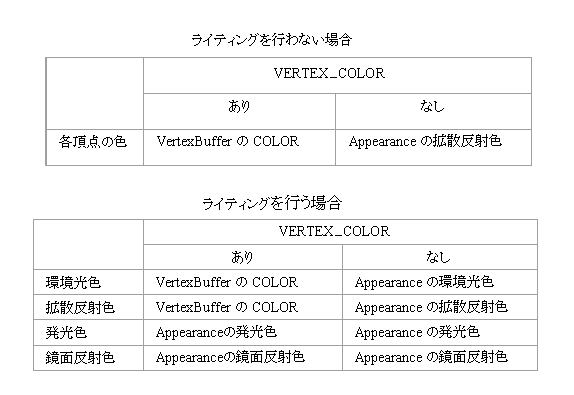
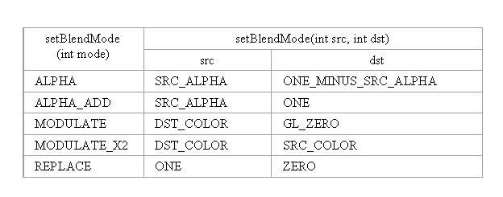
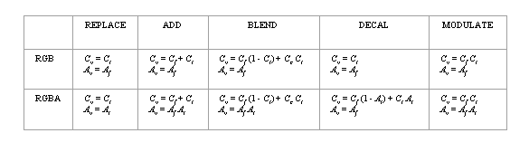

com.docomostar.opt.ui.eruption.Object3D
com.docomostar.opt.ui.eruption.Animatable
com.docomostar.opt.ui.eruption.Appearance
com.docomostar.opt.ui.eruption.Object3D
com.docomostar.opt.ui.eruption.Animatable
com.docomostar.opt.ui.eruption.Appearance
|
|||||||||
| 前のクラス 次のクラス | フレームあり フレームなし | ||||||||
| 概要: 入れ子 | フィールド | コンストラクタ | メソッド | 詳細: フィールド | コンストラクタ | メソッド | ||||||||
Object
public final class Appearance
IndexBuffer が表すサブメッシュに対するレンダリング属性を扱うクラスです。
レンダリング属性には主にテクスチャに関係するもの、色に関係するもの、ブレンド等のモードに関係するものがあります。
MascotCapsule eruption では 2 枚(インデックス 0 〜 1)のテクスチャを用いたマルチテクスチャが可能であるが、実際の使用可能枚数は実行環境に依存します。
なお、ポイントスプライトにおいては 0 枚目のテクスチャのみが使われるため、それ以降の設定は無視されます。
描画処理に当たってライティングまでの処理で使用する色情報を以下に示します。

ここで、環境光色は MCE_MATERIAL_TYPE_AMBIENT の Light からのみ使用されます。その他の色は MCE_MATERIAL_TYPE_AMBIENT 以外の Light から使用されます。
なお、ライティングを行う場合には各ライトの色の影響も受けることに注意してください。
さらに、テクスチャマッピングはこの後で行われるため、最終的な描画色はその影響も受けます。
端末によって、本クラスはサポートされていない場合があります。未サポートの場合、メソッドが呼び出された時点で UnsupportedOperationException が発生します。
グローバルIDについて
Animatable と Action、 Appearance と Texture の組ではグローバルID と呼ばれる番号を用いて関連付けます。両者間のグローバル ID が一致するもの同士でのみ関連付けられます。Action と Appearance に関してはグローバル ID の変更が可能です。Figure.bindAction(ActionTable)Figure や EffectSource は以下の API を通じて関連付けます。Figure.bindTexture(TextureTable)EffectSource.bindTexture(TextureTable)
| フィールドの概要 | |
|---|---|
static int |
MCE_ALPHA_WRITE
カラーバッファへのアルファ要素の書き込みを表します(=0x00000002)。 |
static int |
MCE_BLEND_MODE_ALPHA
ポリゴンに対するアルファブレンドを表します(=0)。 |
static int |
MCE_BLEND_MODE_ALPHA_ADD
ポリゴンに対する加算ブレンドを表します(=1)。 |
static int |
MCE_BLEND_MODE_DST_DST_ALPHA
OpenGL® ES のデスティネーション係数である GL_DST_ALPHA に相当します(=6)。 |
static int |
MCE_BLEND_MODE_DST_ONE
OpenGL® ES のデスティネーション係数である GL_ONE に相当します(=1)。 |
static int |
MCE_BLEND_MODE_DST_ONE_MINUS_DST_ALPHA
OpenGL® ES のデスティネーション係数である GL_ONE_MINUS_DST_ALPHA に相当します(=7)。 |
static int |
MCE_BLEND_MODE_DST_ONE_MINUS_SRC_ALPHA
OpenGL® ES のデスティネーション係数である GL_ONE_MINUS_SRC_ALPHA に相当します(=5)。 |
static int |
MCE_BLEND_MODE_DST_ONE_MINUS_SRC_COLOR
OpenGL® ES のデスティネーション係数である GL_ONE_MINUS_SRC_COLOR に相当します(=3)。 |
static int |
MCE_BLEND_MODE_DST_SRC_ALPHA
OpenGL® ES のデスティネーション係数である GL_SRC_ALPHA に相当します(=4)。 |
static int |
MCE_BLEND_MODE_DST_SRC_COLOR
OpenGL® ES のデスティネーション係数である GL_SRC_COLOR に相当します(=2)。 |
static int |
MCE_BLEND_MODE_DST_ZERO
OpenGL® ES のデスティネーション係数である GL_ZERO に相当します(=0)。 |
static int |
MCE_BLEND_MODE_MODULATE
ポリゴンに対する基本変調ブレンドを表します(=2)。 |
static int |
MCE_BLEND_MODE_MODULATE_X2
ポリゴンに対する高輝度変調ブレンドを表します(=3)。 |
static int |
MCE_BLEND_MODE_REPLACE
ポリゴンに対する置換モードを表します(=4)。 |
static int |
MCE_BLEND_MODE_SRC_DST_ALPHA
OpenGL® ES のソース係数である GL_DST_ALPHA に相当します(=6)。 |
static int |
MCE_BLEND_MODE_SRC_DST_COLOR
OpenGL® ES のソース係数である GL_DST_COLOR に相当します(=2)。 |
static int |
MCE_BLEND_MODE_SRC_ONE
OpenGL® ES のソース係数である GL_ONE に相当します(=1)。 |
static int |
MCE_BLEND_MODE_SRC_ONE_MINUS_DST_ALPHA
OpenGL® ES のソース係数である GL_ONE_MINUS_DST_ALPHA に相当します(=7)。 |
static int |
MCE_BLEND_MODE_SRC_ONE_MINUS_DST_COLOR
OpenGL® ES のソース係数である GL_ONE_MINUS_DST_COLOR に相当します(=3)。 |
static int |
MCE_BLEND_MODE_SRC_ONE_MINUS_SRC_ALPHA
OpenGL® ES のソース係数である GL_ONE_MINUS_SRC_ALPHA に相当します(=5)。 |
static int |
MCE_BLEND_MODE_SRC_SRC_ALPHA
OpenGL® ES のソース係数である GL_SRC_ALPHA に相当します(=4)。 |
static int |
MCE_BLEND_MODE_SRC_SRC_ALPHA_SATURATE
OpenGL® ES のソース係数である GL_SRC_ALPHA_SATURATE に相当します(=8)。 |
static int |
MCE_BLEND_MODE_SRC_ZERO
OpenGL® ES のソース係数である GL_ZERO に相当します(=0)。 |
static int |
MCE_COLOR_WRITE
カラーバッファへの色要素の書き込みを表します(=0x00000004)。 |
static int |
MCE_CULLING_MODE_CULL_BACK
背面カリングを表します(=0)。 |
static int |
MCE_CULLING_MODE_CULL_FRONT
前面カリングを表します(=1)。 |
static int |
MCE_CULLING_MODE_CULL_NONE
カリングなしを表します(=2)。 |
static int |
MCE_DEPTH_OFFSET
デプスオフセットを表します(=0x00000080)。 |
static int |
MCE_DEPTH_TEST
デプステストを表します(=0x00000008)。 |
static int |
MCE_DEPTH_WRITE
デプスバッファへの書き込みを表します(=0x00000010)。 |
static int |
MCE_DRAW_SILHOUETTE
輪郭線の描画を表します(=0x00000200)。 |
static int |
MCE_LIGHT_TWO_SIDE
両面ライティングを表します(=0x00000100)。 |
static int |
MCE_LIGHTING
ライティング有効を表します(=0x00000001)。 |
static int |
MCE_MATERIAL_TYPE_AMBIENT
マテリアルに対する環境光色を表します(=0)。 |
static int |
MCE_MATERIAL_TYPE_DIFFUSE
マテリアルに対する拡散色を表します(=1)。 |
static int |
MCE_MATERIAL_TYPE_EMISSIVE
マテリアルに対する発光色を表します(=2)。 |
static int |
MCE_MATERIAL_TYPE_SPECULAR
マテリアルに対する鏡面反射色を表します(=3)。 |
static int |
MCE_MAX_TEXTURE_NUM
使用可能テクスチャ数を表します(=2)。 |
static int |
MCE_PERSPECTIVE_CORRECT
パースペクティブコレクションを表します(=0x00000020)。 |
static int |
MCE_SHADING_MODE_FLAT
フラットシェーディングを表します(=0)。 |
static int |
MCE_SHADING_MODE_GOURAUD
グーローシェーディングを表します(=1)。 |
static int |
MCE_TEXTURE_FILTER_LINEAR
4 近傍の加重平均を表します(=1)。 |
static int |
MCE_TEXTURE_FILTER_LINEAR_MIPMAP_LINEAR
最適な 2 つのミップマップのそれぞれに対し 4 近傍の加重平均を取得しそれらの加重平均を表します(=5)。 |
static int |
MCE_TEXTURE_FILTER_LINEAR_MIPMAP_NEAREST
最適なミップマップレベルにおける 4 近傍の加重平均を表します(=3)。 |
static int |
MCE_TEXTURE_FILTER_NEAREST
最近傍を表します(=0)。 |
static int |
MCE_TEXTURE_FILTER_NEAREST_MIPMAP_LINEAR
最適な 2 つのミップマップのそれぞれに対し最近傍を取得しそれらの加重平均を表します(=4)。 |
static int |
MCE_TEXTURE_FILTER_NEAREST_MIPMAP_NEAREST
最適なミップマップレベルにおける最近傍を表します(=2)。 |
static int |
MCE_TEXTURE_FILTER_TYPE_MAG
テクスチャ拡大時のフィルタタイプを表します(=1)。 |
static int |
MCE_TEXTURE_FILTER_TYPE_MIN
テクスチャ縮小時のフィルタタイプを表します(=0)。 |
static int |
MCE_TEXTURE_FUNC_ADD
テクスチャに対する加算モードを表します(=1)。 |
static int |
MCE_TEXTURE_FUNC_BLEND
テクスチャに対するブレンドモードを表します(=2)。 |
static int |
MCE_TEXTURE_FUNC_DECAL
テクスチャに対する混合モードを表します(=3)。 |
static int |
MCE_TEXTURE_FUNC_MODULATE
テクスチャに対する乗算モードを表します(=4)。 |
static int |
MCE_TEXTURE_FUNC_REPLACE
テクスチャに対する置き換えモードを表します(=0)。 |
static int |
MCE_TEXTURE_TYPE_COLORMAP
通常のテクスチャを表します(=0)。 |
static int |
MCE_TEXTURE_TYPE_LIGHTMAP
ライトマップテクスチャを表します(=2)。 |
static int |
MCE_TEXTURE_TYPE_NORMALMAP
法線マップテクスチャを表します(=3)。 |
static int |
MCE_TEXTURE_TYPE_PROJECTIVE
投影テクスチャを表します(=4)。 |
static int |
MCE_TEXTURE_TYPE_REFLECTMAP
環境マップテクスチャを表します(=1)。 |
static int |
MCE_TEXTURE_WRAP_CLAMP
テクスチャのラッピングモード：クランプを表します(=1)。 |
static int |
MCE_TEXTURE_WRAP_REPEAT
テクスチャのラッピングモード：リピートを表します(=0)。 |
static int |
MCE_USE_FIGURE_APPEARANCE
Figure の Appearance を使用します(=0x00000800)。 |
static int |
MCE_VERTEX_COLOR
頂点カラーを表します(=0x00000040)。 |
static int |
MCE_VISIBLE
描画有効を表します(=0x00000400)。 |
| クラス com.docomostar.opt.ui.eruption.Animatable から継承されたフィールド |
|---|
MCE_MAX_ACTION_NUM |
| コンストラクタの概要 | |
|---|---|
Appearance()
Appearance を生成します。 |
|
| メソッドの概要 | |
|---|---|
int |
getAlphaThreshold()
アルファテストの閾値を取得します。 |
int |
getBlendModeDst()
destination blending factor を取得します。 |
int |
getBlendModeSrc()
source blending factor を取得します。 |
int |
getColor(int colorType)
Appearance の色を取得します。 |
int |
getCullingMode()
カリングモードを取得します。 |
int |
getDrawOrder()
描画順位を取得します。 |
float |
getPolygonOffsetFactor()
デプスオフセットの factor を取得します。 |
float |
getPolygonOffsetUnits()
デプスオフセットの unit を取得します。 |
Camera |
getProjector(int ix)
投影テクスチャでプロジェクタとして使用するカメラを取得します。 |
int |
getProperties()
Appearance のプロパティを取得します。 |
int |
getShadingMode()
シェーディングモードを取得します。 |
int |
getShininess()
Appearance の輝度を取得します。 |
int |
getSilhouetteColor()
輪郭線描画時の色を取得します。 |
float |
getSilhouetteWidth()
輪郭線描画時の太さを取得します。 |
Light |
getSoftwareLight(int ix)
設定されているライトマップ、法線マップで使用するライトを取得します。 |
Texture |
getTexture(int ix)
テクスチャを取得します。 |
int |
getTextureBlendColor(int ix)
テクスチャブレンドカラーを取得します。 |
int |
getTextureBlendMode(int ix)
テクスチャブレンドモードを取得します。 |
int |
getTextureFilter(int ix,
int type)
テクスチャフィルタモードを取得します。 |
boolean |
getTextureHint(int ix)
Texture に対するヒントを取得します(環境マップに関してのみ有効です)。 |
int |
getTextureRefGid(int ix)
関連付けるテクスチャのグローバルID を取得します。 |
int |
getTextureType(int ix)
テクスチャ種別を取得します。 |
int |
getTextureUvStream(int ix)
使用するUV情報を取得します。 |
int |
getTextureWrapModeS(int ix)
Texture の S 方向のラッピングモードを取得します。 |
int |
getTextureWrapModeT(int ix)
Texture の T 方向のラッピングモードを取得します。 |
void |
getTransform(int ix,
Transform dst)
テクスチャ座標に対する変換行列を取得します。 |
int |
getUserData(int ix)
ユーザデータを取得します。 |
void |
setAlphaThreshold(int alphaThreshold)
アルファテストの閾値を設定します。 |
void |
setBlendMode(int mode)
ブレンドモードを設定します。 |
void |
setBlendMode(int src,
int dst)
source blending factor と destination blending factor を別々にブレンドモードを設定します。 |
void |
setColor(int colorType,
int abgr)
Appearance の色を設定します。 |
void |
setCullingMode(int mode)
カリングモードを設定します。 |
void |
setDrawOrder(int order)
描画順位を設定します。 |
void |
setIdentity(int ix)
テクスチャ座標の変換行列を恒等変換に設定します。 |
void |
setPolygonOffset(float factor,
float unit)
デプスオフセットを設定します。 |
void |
setProjector(int ix,
Camera projector)
投影テクスチャでプロジェクタとして使用するカメラを設定します。 |
void |
setProperties(int properties)
Appearance のプロパティを設定します。 |
void |
setRotateEuler(int ix,
int type,
Vector3D v)
テクスチャ座標の変換行列の回転成分を設定します(オイラー指定)。 |
void |
setScale(int ix,
Vector3D v)
テクスチャ座標の変換行列のスケール成分を設定します(ベクタ指定)。 |
void |
setShadingMode(int mode)
シェーディングモードを設定します。 |
void |
setShininess(int shininess)
Appearance の輝度を設定します。 |
void |
setSilhouette(float width,
int bgr)
輪郭線描画時のパラメータを設定します。 |
void |
setSoftwareLight(int ix,
Light light)
ライトマップ、法線マップで使用するライトを設定します。 |
void |
setTexture(int ix,
Texture texture)
テクスチャを設定します。 |
void |
setTextureBlendColor(int ix,
int abgr)
テクスチャブレンドカラーを設定します。 |
void |
setTextureBlendMode(int ix,
int mode)
テクスチャブレンドモードを設定します。 |
void |
setTextureFilter(int ix,
int type,
int fmode)
テクスチャフィルタモードを設定します。 |
void |
setTextureHint(int ix,
boolean hint)
Texture に対するヒントを設定します(環境マップに関してのみ有効です)。 |
void |
setTextureRefGid(int ix,
int rgid)
関連付けるテクスチャのグローバルIDを設定します。 |
void |
setTextureType(int ix,
int type)
テクスチャ種別を設定します。 |
void |
setTextureUvStream(int ix,
int uvStream)
使用するUV情報を設定します。 |
void |
setTextureWrapMode(int ix,
int wrapS,
int wrapT)
Texture のラッピングモードを設定します。 |
void |
setTransform(int ix,
Transform src)
テクスチャ座標に対する変換行列を設定します。 |
void |
setTranslate(int ix,
Vector3D v)
テクスチャ座標の変換行列の平行移動成分を設定します。 |
void |
setUserData(int ix,
int val)
ユーザデータを設定します。 |
| クラス com.docomostar.opt.ui.eruption.Animatable から継承されたメソッド |
|---|
getAction, getAction, getActionController, getFrame, getRefGid, getRefGid, setAction, setAction, setActionController, setFrame, setRefGid, setRefGid, setUseActionControllerNum, updatePosture |
| クラス com.docomostar.opt.ui.eruption.Object3D から継承されたメソッド |
|---|
dispose, equals, findObject3D, findObject3D, getClassType, getUserId, hashCode, isDisposed, isRenderEnable, setRenderEnable, setUserId |
| クラス Object から継承されたメソッド |
|---|
getClass, notify, notifyAll, toString, wait, wait, wait |
| フィールドの詳細 |
|---|
public static final int MCE_BLEND_MODE_ALPHA
public static final int MCE_BLEND_MODE_ALPHA_ADD
public static final int MCE_BLEND_MODE_MODULATE
public static final int MCE_BLEND_MODE_MODULATE_X2
public static final int MCE_BLEND_MODE_REPLACE
public static final int MCE_BLEND_MODE_SRC_ZERO
GL_ZERO に相当します(=0)。
public static final int MCE_BLEND_MODE_SRC_ONE
GL_ONE に相当します(=1)。
public static final int MCE_BLEND_MODE_SRC_DST_COLOR
GL_DST_COLOR に相当します(=2)。
public static final int MCE_BLEND_MODE_SRC_ONE_MINUS_DST_COLOR
GL_ONE_MINUS_DST_COLOR に相当します(=3)。
public static final int MCE_BLEND_MODE_SRC_SRC_ALPHA
GL_SRC_ALPHA に相当します(=4)。
public static final int MCE_BLEND_MODE_SRC_ONE_MINUS_SRC_ALPHA
GL_ONE_MINUS_SRC_ALPHA に相当します(=5)。
public static final int MCE_BLEND_MODE_SRC_DST_ALPHA
GL_DST_ALPHA に相当します(=6)。
public static final int MCE_BLEND_MODE_SRC_ONE_MINUS_DST_ALPHA
GL_ONE_MINUS_DST_ALPHA に相当します(=7)。
public static final int MCE_BLEND_MODE_SRC_SRC_ALPHA_SATURATE
GL_SRC_ALPHA_SATURATE に相当します(=8)。
public static final int MCE_BLEND_MODE_DST_ZERO
GL_ZERO に相当します(=0)。
public static final int MCE_BLEND_MODE_DST_ONE
GL_ONE に相当します(=1)。
public static final int MCE_BLEND_MODE_DST_SRC_COLOR
GL_SRC_COLOR に相当します(=2)。
public static final int MCE_BLEND_MODE_DST_ONE_MINUS_SRC_COLOR
GL_ONE_MINUS_SRC_COLOR に相当します(=3)。
public static final int MCE_BLEND_MODE_DST_SRC_ALPHA
GL_SRC_ALPHA に相当します(=4)。
public static final int MCE_BLEND_MODE_DST_ONE_MINUS_SRC_ALPHA
GL_ONE_MINUS_SRC_ALPHA に相当します(=5)。
public static final int MCE_BLEND_MODE_DST_DST_ALPHA
GL_DST_ALPHA に相当します(=6)。
public static final int MCE_BLEND_MODE_DST_ONE_MINUS_DST_ALPHA
GL_ONE_MINUS_DST_ALPHA に相当します(=7)。
public static final int MCE_MATERIAL_TYPE_AMBIENT
public static final int MCE_MATERIAL_TYPE_DIFFUSE
public static final int MCE_MATERIAL_TYPE_EMISSIVE
public static final int MCE_MATERIAL_TYPE_SPECULAR
public static final int MCE_CULLING_MODE_CULL_BACK
public static final int MCE_CULLING_MODE_CULL_FRONT
public static final int MCE_CULLING_MODE_CULL_NONE
public static final int MCE_SHADING_MODE_FLAT
public static final int MCE_SHADING_MODE_GOURAUD
public static final int MCE_TEXTURE_FUNC_REPLACE
public static final int MCE_TEXTURE_FUNC_ADD
public static final int MCE_TEXTURE_FUNC_BLEND
public static final int MCE_TEXTURE_FUNC_DECAL
public static final int MCE_TEXTURE_FUNC_MODULATE
public static final int MCE_TEXTURE_TYPE_COLORMAP
public static final int MCE_TEXTURE_TYPE_REFLECTMAP
public static final int MCE_TEXTURE_TYPE_LIGHTMAP
public static final int MCE_TEXTURE_TYPE_NORMALMAP
public static final int MCE_TEXTURE_TYPE_PROJECTIVE
public static final int MCE_LIGHTING
public static final int MCE_ALPHA_WRITE
public static final int MCE_COLOR_WRITE
public static final int MCE_DEPTH_TEST
public static final int MCE_DEPTH_WRITE
public static final int MCE_PERSPECTIVE_CORRECT
public static final int MCE_VERTEX_COLOR
public static final int MCE_DEPTH_OFFSET
public static final int MCE_LIGHT_TWO_SIDE
public static final int MCE_DRAW_SILHOUETTE
public static final int MCE_VISIBLE
public static final int MCE_USE_FIGURE_APPEARANCE
Figure の Appearance を使用します(=0x00000800)。
public static final int MCE_TEXTURE_WRAP_REPEAT
public static final int MCE_TEXTURE_WRAP_CLAMP
public static final int MCE_TEXTURE_FILTER_TYPE_MIN
public static final int MCE_TEXTURE_FILTER_TYPE_MAG
public static final int MCE_TEXTURE_FILTER_NEAREST
public static final int MCE_TEXTURE_FILTER_LINEAR
public static final int MCE_TEXTURE_FILTER_NEAREST_MIPMAP_NEAREST
public static final int MCE_TEXTURE_FILTER_LINEAR_MIPMAP_NEAREST
public static final int MCE_TEXTURE_FILTER_NEAREST_MIPMAP_LINEAR
public static final int MCE_TEXTURE_FILTER_LINEAR_MIPMAP_LINEAR
public static final int MCE_MAX_TEXTURE_NUM
| コンストラクタの詳細 |
|---|
public Appearance()
Appearance を生成します。
初期値は以下の通りです。
MCE_ALPHA_WRITE|MCE_COLOR_WRITE |MCE_DEPTH_TEST |MCE_DEPTH_WRITE |MCE_VISIBLE
MCE_BLEND_MODE_SRC_ONE
MCE_BLEND_MODE_DST_ZERO
MCE_CULLING_MODE_CULL_BACK
MCE_SHADING_MODE_GOURAUD
null
MCE_TEXTURE_FUNC_REPLACE
MCE_TEXTURE_TYPE_COLORMAP
MCE_TEXTURE_WRAP_REPEAT
MCE_TEXTURE_WRAP_REPEAT
MCE_TEXTURE_FILTER_NEAREST
MCE_TEXTURE_FILTER_NEAREST
null
Light : null
Camera : null
false
| メソッドの詳細 |
|---|
public final void setColor(int colorType,
int abgr)
Appearance の色を設定します。
colorType - カラータイプを指定します。指定できる値は以下の通りです。
MCE_MATERIAL_TYPE_AMBIENT
MCE_MATERIAL_TYPE_DIFFUSE
MCE_MATERIAL_TYPE_EMISSIVE
MCE_MATERIAL_TYPE_SPECULAR
abgr - 色(0xAABBGGRR) を指定します。
IllegalArgumentException -
colorType が不正な場合に発生します。public final int getColor(int colorType)
Appearance の色を取得します。
colorType - カラータイプを指定します。指定できる値は、以下の通りです。
MCE_MATERIAL_TYPE_AMBIENT
MCE_MATERIAL_TYPE_DIFFUSE
MCE_MATERIAL_TYPE_EMISSIVE
MCE_MATERIAL_TYPE_SPECULAR
AABBGGRR) を返します。setColor(int, int) でセットした値とは必ずしも一致せず、若干の誤差を含む場合があります。
IllegalArgumentException -
colorType が不正な場合に発生します。public final void setShininess(int shininess)
Appearance の輝度を設定します。
輝度は鏡面反射光の計算に用いられます。この値が大きくなるにつれ、鏡面反射によるハイライトは狭い範囲に集中します。
shininess - 輝度を指定します。
IllegalArgumentException -
shininess が [0, 255] 以外の場合に発生します。public final int getShininess()
Appearance の輝度を取得します。
setShininess(int) でセットした値とは必ずしも一致せず、若干の誤差を含む場合があります。public final void setProperties(int properties)
Appearance のプロパティを設定します。
properties - プロパティを指定します。指定できる値は以下の通りです(複数指定可)。
MCE_LIGHTING
MCE_ALPHA_WRITE
MCE_COLOR_WRITE
MCE_DEPTH_TEST
MCE_DEPTH_WRITE
MCE_PERSPECTIVE_CORRECT
MCE_VERTEX_COLOR
MCE_DEPTH_OFFSET
MCE_LIGHT_TWO_SIDE
MCE_DRAW_SILHOUETTE
MCE_VISIBLE
Figure の Appearance を使用 - MCE_USE_FIGURE_APPEARANCE
public final int getProperties()
Appearance のプロパティを取得します。
public final void setAlphaThreshold(int alphaThreshold)
この値が 0 よりも大きいときにはアルファテストが行われ、閾値を下回るものは描画されなくなります。
alphaThreshold - アルファテストの閾値を指定します。
IllegalArgumentException -
alphaThreshold が [0, 255] 以外の場合に発生します。public final int getAlphaThreshold()
public final void setPolygonOffset(float factor,
float unit)
デプスオフセットを設定します。
デプステストとデプス書き込みの直前にピクセルの画面空間z座標に追加される値を設定します。
デプスオフセットは各ポリゴンについて以下の計算式が適用されます。
オフセット = m * factor + r * unit
m = ポリゴンの最大デプススロープ(z 勾配)
r = デプスバッファの識別可能な最小インクリメント
factor - スロープに依存するデプスオフセットを指定します。unit - コンスタントデプスオフセットを指定します。public final float getPolygonOffsetFactor()
factor を取得します。
setPolygonOffset(float, float) で設定された factor を返します。public final float getPolygonOffsetUnits()
unit を取得します。
setPolygonOffset(float, float) で設定された unit を返します。public final void setBlendMode(int mode)
mode - ブレンドモードを指定します。指定できる値は、以下の通りです。
MCE_BLEND_MODE_ALPHA
MCE_BLEND_MODE_ALPHA_ADD
MCE_BLEND_MODE_MODULATE
MCE_BLEND_MODE_MODULATE_X2
MCE_BLEND_MODE_REPLACE
当 API の引数 と setBlendMode(int, int) の引数との関係は以下の通りです (プレフィックス は省略しています)。

IllegalArgumentException -
mode が不正な場合に発生します。
public final void setBlendMode(int src,
int dst)
source blending factor と destination blending factor を別々にブレンドモードを設定します。
src - source blending factorを指定します。指定できる値は以下の通りです。(sR, sG, sB, sA)
MCE_BLEND_MODE_SRC_ZERO
MCE_BLEND_MODE_SRC_ONE
MCE_BLEND_MODE_SRC_DST_COLOR
MCE_BLEND_MODE_SRC_ONE_MINUS_DST_COLOR
MCE_BLEND_MODE_SRC_SRC_ALPHA
MCE_BLEND_MODE_SRC_ONE_MINUS_SRC_ALPHA
MCE_BLEND_MODE_SRC_DST_ALPHA
MCE_BLEND_MODE_SRC_ONE_MINUS_DST_ALPHA
MCE_BLEND_MODE_SRC_SRC_ALPHA_SATURATE
dst - destination blending factorを指定します。指定できる値は以下の通りです。 (dR, dG, dB, dA)
MCE_BLEND_MODE_DST_ZERO
MCE_BLEND_MODE_DST_ONE
MCE_BLEND_MODE_DST_SRC_COLOR
MCE_BLEND_MODE_DST_ONE_MINUS_SRC_COLOR
MCE_BLEND_MODE_DST_SRC_ALPHA
MCE_BLEND_MODE_DST_ONE_MINUS_SRC_ALPHA
MCE_BLEND_MODE_DST_DST_ALPHA
MCE_BLEND_MODE_DST_ONE_MINUS_DST_ALPHA
Cs (C は R, G, B, A のいずれか) は source の各成分値、Cd はdestination の各成分値、kC は各成分を [0, 1] の区間内に収めるためのスケール値であり、
kC = s^ mC - 1 になります。
(mR, mG, mB, mA) はそれぞれ R, G, B, A のビットプレーン数です。
ブレンドの式は
Rd = min( kR, Rs sR + Rd dR )
Gd = min( kG, Gs sG + Gd dG )
Bd = min( kB, Bs sB + Bd dB )
Ad = min( kA, As sA + Ad dA )
IllegalArgumentException -
src または dst が不正な場合に発生します。public final int getBlendModeSrc()
source blending factor を取得します。
public final int getBlendModeDst()
destination blending factor を取得します。
public final void setCullingMode(int mode)
mode - カリングモードを指定します。指定できる値は、以下の通りです。
MCE_CULLING_MODE_CULL_BACK
MCE_CULLING_MODE_CULL_FRONT
MCE_CULLING_MODE_CULL_NONE
ポリゴンの裏表に関しては IndexBuffer を参照してください。
IllegalArgumentException -
mode が不正な場合に発生します。public final int getCullingMode()
public final void setShadingMode(int mode)
mode - シェーディングモードを指定します。指定できる値は、以下の通りです。
MCE_SHADING_MODE_FLAT
MCE_SHADING_MODE_GOURAUD
IllegalArgumentException -
mode が不正な場合に発生します。public final int getShadingMode()
public final void setDrawOrder(int order)
orderが小さいものから描画します。
order - 描画順位を指定します。
IllegalArgumentException -
order が [-32768, 32767] 以外の場合に発生します。public final int getDrawOrder()
public final void setTextureBlendMode(int ix,
int mode)
ix - Texture のインデックスを指定します。mode - テクスチャブレンドモードを指定します。指定できる値は、以下の通りです。
MCE_TEXTURE_FUNC_REPLACE
MCE_TEXTURE_FUNC_ADD
MCE_TEXTURE_FUNC_BLEND
MCE_TEXTURE_FUNC_DECAL
MCE_TEXTURE_FUNC_MODULATE
アルファ有り、なしそれぞれのテクスチャに関して、各モードの意味は以下の通りです。ここで、C は各色、A はアルファ値を示します。添字は v が出力、t がテクスチャ、f が前段までの結果を表します。

IllegalArgumentException -
ix が [0, 1] 以外の場合に発生します。
IllegalArgumentException -
mode が不正な場合に発生します。public final int getTextureBlendMode(int ix)
ix - Texture のインデックスを指定します。
IllegalArgumentException -
ix が [0, 1] 以外の場合に発生します。
public final void setTextureBlendColor(int ix,
int abgr)
アルファ値の設定が可能ですが、現状の描画実装では無視されます。
ix - Texture のインデックスを指定します。abgr - ブレンドカラー(0xAABBGGRR)を指定します。
IllegalArgumentException -
ix が [0, 1] 以外の場合に発生します。public final int getTextureBlendColor(int ix)
ix - Texture のインデックスを指定します。
0xAABBGGRR)を返します。
内部では処理に最適化された値が保持されているため、setTextureBlendColor(int, int) でセットした値とは必ずしも一致せず、若干の誤差を含む場合があります。
IllegalArgumentException -
ix が [0, 1] 以外の場合に発生します。
public final void setTextureWrapMode(int ix,
int wrapS,
int wrapT)
Texture のラッピングモードを設定します。
ix - Texture のインデックス(0 〜 1)を指定します。wrapS - S方向(U方向)のラッピングモード(MCE_TEXTURE_WRAP_REPEAT or MCE_TEXTURE_WRAP_CLAMP)を指定します。wrapT - T方向(V方向)のラッピングモード(MCE_TEXTURE_WRAP_REPEAT or MCE_TEXTURE_WRAP_CLAMP)を指定します。
IllegalArgumentException -
ix が [0, 1] 以外の場合に発生します。
IllegalArgumentException -
wrapS が不正な場合に発生します。
IllegalArgumentException -
wrapT が不正な場合に発生します。public final int getTextureWrapModeS(int ix)
Texture の S 方向のラッピングモードを取得します。
ix - Texture を指定します。(0 〜 1)
Texture のラッピングモードを返します。
IllegalArgumentException -
ix が [0, 1] 以外の場合に発生します。public final int getTextureWrapModeT(int ix)
Texture の T 方向のラッピングモードを取得します。
ix - Texture を指定します。(0 〜 1)
Texture のラッピングモードを返します。
IllegalArgumentException -
ix が [0, 1] 以外の場合に発生します。
public final void setTextureFilter(int ix,
int type,
int fmode)
ix - Texture のインデックスを指定します。type - テクスチャフィルタタイプを指定します。指定できる値は、以下の通りです。
MCE_TEXTURE_FILTER_TYPE_MIN
MCE_TEXTURE_FILTER_TYPE_MAG
fmode - テクスチャフィルタモードを指定します。指定できる値は、以下の通りです。
MCE_TEXTURE_FILTER_NEAREST
MCE_TEXTURE_FILTER_LINEAR
MCE_TEXTURE_FILTER_NEAREST_MIPMAP_NEAREST
MCE_TEXTURE_FILTER_LINEAR_MIPMAP_NEAREST
MCE_TEXTURE_FILTER_NEAREST_MIPMAP_LINEAR
MCE_TEXTURE_FILTER_LINEAR_MIPMAP_LINEAR
IllegalArgumentException -
ix が [0, 1] 以外の場合に発生します。
IllegalArgumentException -
type が不正な場合に発生します。
IllegalArgumentException -
ix 番目に設定されているテクスチャがミップマップを使用しておらず、fmode が MCE_TEXTURE_FILTER_NEAREST_MIPMAP_NEAREST, MCE_TEXTURE_FILTER_LINEAR_MIPMAP_NEAREST, MCE_TEXTURE_FILTER_NEAREST_MIPMAP_LINEAR, MCE_TEXTURE_FILTER_LINEAR_MIPMAP_LINEAR のいずれかの場合に発生します。
IllegalArgumentException -
type が MCE_TEXTURE_FILTER_TYPE_MAG かつ fmode が MCE_TEXTURE_FILTER_NEAREST、MCE_TEXTURE_FILTER_LINEAR 以外の場合に発生します。
IllegalArgumentException -
type が MCE_TEXTURE_FILTER_TYPE_MIN かつ fmode が 不正な場合に発生します。
public final int getTextureFilter(int ix,
int type)
ix - Texture のインデックスを指定します。type - テクスチャフィルタタイプを指定します。指定できる値は、以下の通りです。
MCE_TEXTURE_FILTER_TYPE_MIN
MCE_TEXTURE_FILTER_TYPE_MAG
IllegalArgumentException -
ix が [0, 1] 以外の場合に発生します。
IllegalArgumentException -
type が不正な場合に発生します。
public final void setTransform(int ix,
Transform src)
ix - Texture のインデックスを指定します。src - 変換行列を指定します。
IllegalArgumentException -
ix が [0, 1] 以外の場合に発生します。
NullPointerException -
src が null の場合に発生します。
public final void getTransform(int ix,
Transform dst)
ix - Texture のインデックスを指定します。dst - 取得する変換行列の格納先を指定します。一度内部状態に変換されるため、セットされた値と同じ値になるとは限りません。
IllegalArgumentException -
ix が [0, 1] 以外の場合に発生します。
NullPointerException -
dst が null の場合に発生します。public final void setIdentity(int ix)
ix - Texture のインデックスを指定します。
IllegalArgumentException -
ix が [0, 1] 以外の場合に発生します。
public final void setTranslate(int ix,
Vector3D v)
ix - Texture のインデックスを指定します。v - 平行移動成分を表すベクトルを指定します。
NullPointerException -
v が null の場合に発生します。
IllegalArgumentException -
ix が [0, 1] 以外の場合に発生します。
public final void setRotateEuler(int ix,
int type,
Vector3D v)
ix - Texture のインデックスを指定します。type - 回転順を指定します。指定できる値は、以下の通りです。
Transform.MCE_ROTATE_EULER_XYZ
Transform.MCE_ROTATE_EULER_XZY
Transform.MCE_ROTATE_EULER_YXZ
Transform.MCE_ROTATE_EULER_YZX
Transform.MCE_ROTATE_EULER_ZXY
Transform.MCE_ROTATE_EULER_ZYX
v - 各軸の回転成分を表す Vector3D を指定します(1.0=360度)。
NullPointerException -
v が null の場合に発生します。
IllegalArgumentException -
ix が [0, 1] 以外の場合に発生します。
IllegalArgumentException -
type が不正な場合に発生します。
public final void setScale(int ix,
Vector3D v)
ix - Texture のインデックスを指定します。v - スケール成分を表すベクトルを指定します。
NullPointerException -
v が null の場合に発生します。
IllegalArgumentException -
ix が [0, 1] 以外の場合に発生します。
public final void setTexture(int ix,
Texture texture)
ix - Texture のインデックスを指定します。texture - 設定する Texture を指定します。
IllegalArgumentException -
ix が [0, 1] 以外の場合に発生します。
IllegalArgumentException -
Texture がミップマップを使用していない状態で、This 内の Appearance の MCE_TEXTURE_FILTER_TYPE_MIN に対応するテクスチャフィルタが MCE_TEXTURE_FILTER_NEAREST_MIPMAP_NEAREST, MCE_TEXTURE_FILTER_LINEAR_MIPMAP_NEAREST, MCE_TEXTURE_FILTER_NEAREST_MIPMAP_LINEAR, MCE_TEXTURE_FILTER_LINEAR_MIPMAP_LINEAR のいずれかの場合に発生します。public final Texture getTexture(int ix)
ix - Texture のインデックスを指定します。
Texture を返します。
IllegalArgumentException -
ix が [0, 1] 以外の場合に発生します。
public final void setTextureRefGid(int ix,
int rgid)
ix - Texture のインデックスを指定します。rgid - 関連付けるテクスチャのグローバルID を指定します。
IllegalArgumentException -
ix が [0, 1] 以外の場合に発生します。public final int getTextureRefGid(int ix)
ix - Texture のインデックスを指定します。
IllegalArgumentException -
ix が [0, 1] 以外の場合に発生します。
public final void setTextureType(int ix,
int type)
ix - Texture のインデックスを指定します。type - テクスチャタイプを指定します。指定できる値は、以下の通りです。
MCE_TEXTURE_TYPE_COLORMAP
MCE_TEXTURE_TYPE_REFLECTMAP
MCE_TEXTURE_TYPE_LIGHTMAP
MCE_TEXTURE_TYPE_NORMALMAP
MCE_TEXTURE_TYPE_PROJECTIVE
各種別のマッピング手法は以下の通りです。
IllegalArgumentException -
ix が [0, 1] 以外の場合に発生します。
IllegalArgumentException -
type が不正な場合に発生します。public final int getTextureType(int ix)
ix - Texture のインデックスを指定します。
IllegalArgumentException -
ix が [0, 1] 以外の場合に発生します。
public final void setSilhouette(float width,
int bgr)
width - 輪郭線の太さ(実際には元のモデルに対する拡大量となります。0.0 指定で等倍を表します)を指定します。
width は pixel 幅ではないことに注意してください。輪郭線描画は簡易的な描画手法を用いて行われます。
具体的には描画前に描画対象のカリングモードを前面カリングにしたうえで、width を元に拡大率を指定し、color の色で描画した後、通常の描画を行います。
そのため、アルファブレンドなどを併用した場合の描画結果は通常期待されるものとは異なります。拡大はメッシュの中心位置を基準に行われます。
bgr - 輪郭線の描画色(0xBBGGRR)を指定します。
IllegalArgumentException -
width が 0 未満の場合に発生します。public final float getSilhouetteWidth()
public final int getSilhouetteColor()
0xBBGGRR)を返します。
public final void setSoftwareLight(int ix,
Light light)
ix - Texture のインデックスを指定します。light - Light オブジェクトを指定します。
ライトマップ、法線マップの効果を得るには事前にこのAPIで使用する Light を設定する必要があります。
Light.MCE_LIGHT_TYPE_DIRECTION の場合は 位置と方向、Light.MCE_LIGHT_TYPE_OMNI の場合は 位置情報のみが使用されます。
IllegalArgumentException -
ix が [0, 1] 以外の場合に発生します。
IllegalArgumentException -
light が null以外、 かつ light のタイプが Light.MCE_LIGHT_TYPE_DIRECTION, Light.MCE_LIGHT_TYPE_OMNI 以外の場合に発生します。public final Light getSoftwareLight(int ix)
ix - Texture のインデックスを指定します。
Light オブジェクトを返します。
IllegalArgumentException -
ix が [0, 1] 以外の場合に発生します。
public final void setProjector(int ix,
Camera projector)
ix - Texture のインデックスを指定します。projector - Camera オブジェクトを指定します。
IllegalArgumentException -
ix が [0, 1] 以外の場合に発生します。public final Camera getProjector(int ix)
ix - Texture のインデックスを指定します。
Camera オブジェクトを返します。
IllegalArgumentException -
ix が [0, 1] 以外の場合に発生します。
public final void setTextureHint(int ix,
boolean hint)
Texture に対するヒントを設定します(環境マップに関してのみ有効です)。
ix - Texture のインデックスを指定します。hint - ヒントを指定します。指定できる値は、以下の通りです。
true
false
IllegalArgumentException -
ix が [0, 1] 以外の場合に発生します。public final boolean getTextureHint(int ix)
Texture に対するヒントを取得します(環境マップに関してのみ有効です)。
ix - Texture のインデックスを指定します。
true
false
IllegalArgumentException -
ix が [0, 1] 以外の場合に発生します。
public final void setUserData(int ix,
int val)
1 つの Appearanceに対し、64個(インデックス[0, 63])までのユーザデータ(符号付32ビット)を
格納することが出来ます。初回呼び出し時にユーザデータ格納用の領域が確保されます。
ix - ユーザデータのインデックスを指定します。val - 設定する値を指定します。
IllegalArgumentException -
ix が [0, 63] 以外の場合に発生します。public final int getUserData(int ix)
ix - ユーザデータのインデックスを指定します。
IllegalArgumentException -
ix が [0, 63] 以外の場合に発生します。
com.docomostar.lang.IllegalStateException -
setUserData(int, int) を一度も呼んでいない ) 場合に発生します。public final int getTextureUvStream(int ix)
ix - テクスチャのインデックスを指定します。
VertexBuffer.MCE_TEXTURE2D_0
VertexBuffer.MCE_TEXTURE2D_1
IllegalArgumentException -
ix が [0, 1] 以外のな場合に発生します。
public final void setTextureUvStream(int ix,
int uvStream)
ix - テクスチャのインデックスを指定します。uvStream - 使用するUV値を指定します。指定できる値は、以下の通りです。
VertexBuffer.MCE_TEXTURE2D_0
VertexBuffer.MCE_TEXTURE2D_1
IllegalArgumentException -
ix が [0, 1] 以外の場合に発生します。
IllegalArgumentException -
uvStream が不正な場合に発生します。
|
|||||||||
| 前のクラス 次のクラス | フレームあり フレームなし | ||||||||
| 概要: 入れ子 | フィールド | コンストラクタ | メソッド | 詳細: フィールド | コンストラクタ | メソッド | ||||||||
NTT DOCOMO,INC.
本製品または文書は著作権法により保護されており、その使用、複製、再頒布および逆コンパイルを制限するライセンスのもとにおいて頒布されます。NTTドコモ（その他に許諾者がある場合は当該許諾者も含めて）の書面による事前の許可なく、本製品および関連する文書のいかなる部分も、いかなる方法によっても複製することが禁じられます。フォントを含む第三者のソフトウェアは、著作権法により保護されており、その提供者からライセンスを受けているものです。
Sun、Sun Microsystems、Java、J2MEおよびJ2SEは、米国およびその他の国における米国 Sun Microsystems,Inc.の商標または登録商標です。サンのロゴマークは、米国 Sun Microsystems, Inc.の登録商標です。
FeliCaは、ソニー株式会社が開発した非接触ICカードの技術方式です。FeliCaは、ソニー株式会社の登録商標です。
「ｉモード」、「ｉアプリ／アイアプリ」、「ｉ-αppli」ロゴ、「DoJa」はNTTドコモの商標または登録商標です。
その他記載された会社名、製品名などは該当する各社の商標または登録商標です。